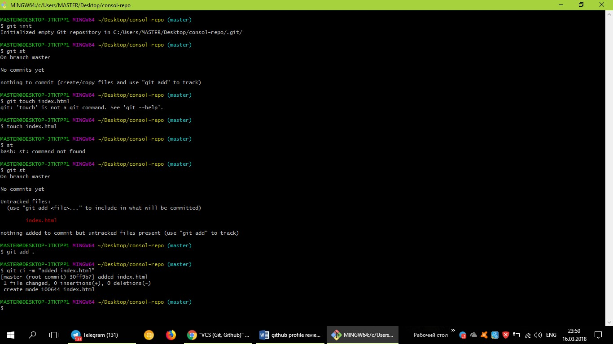
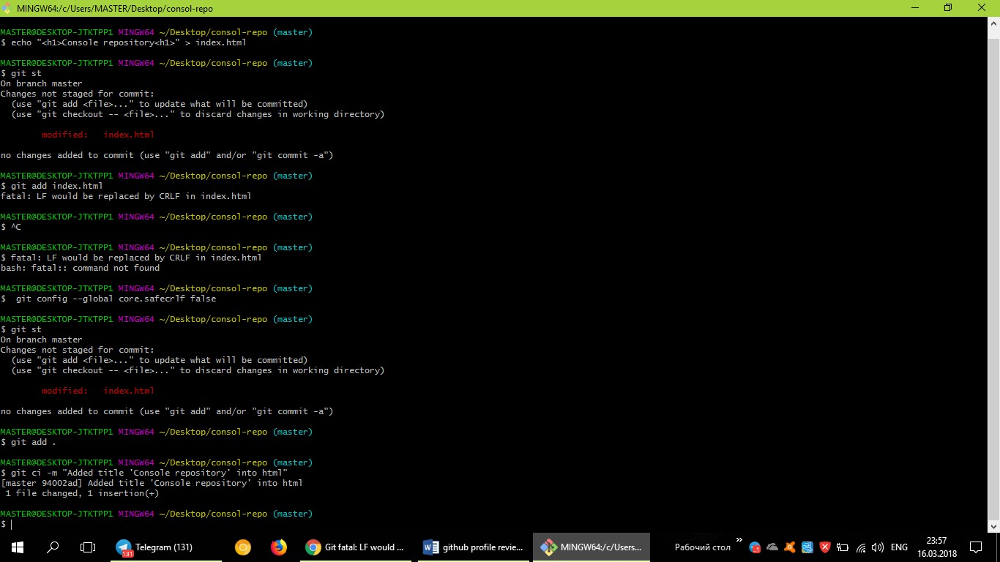
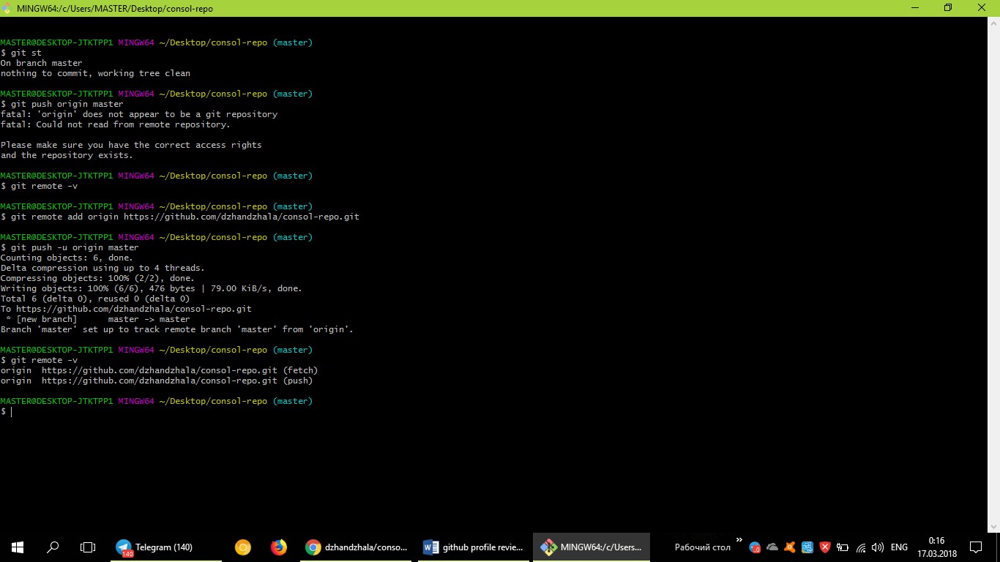
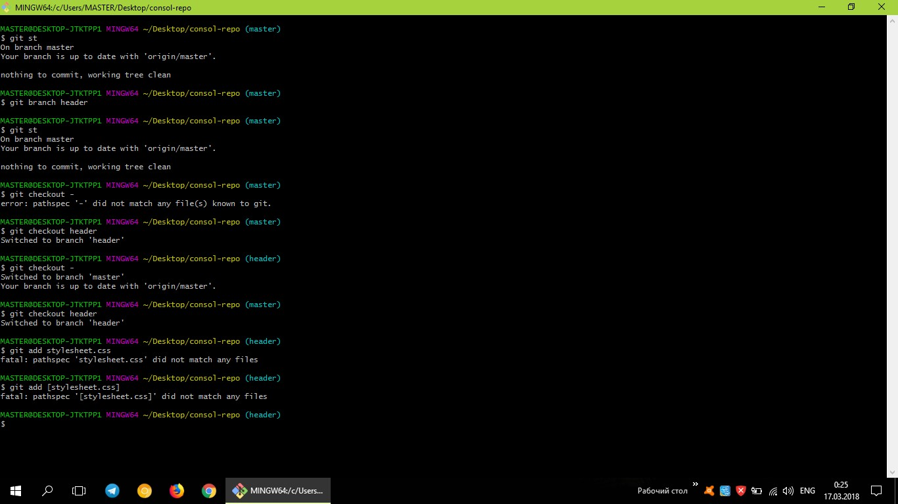
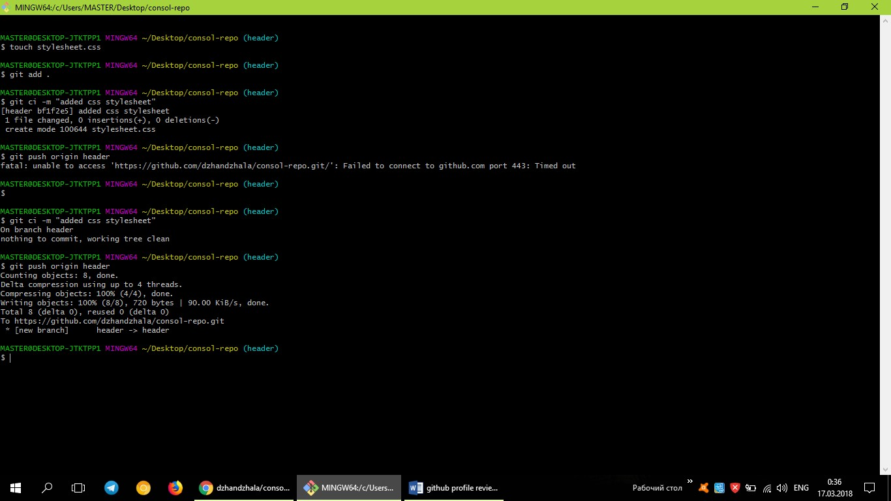
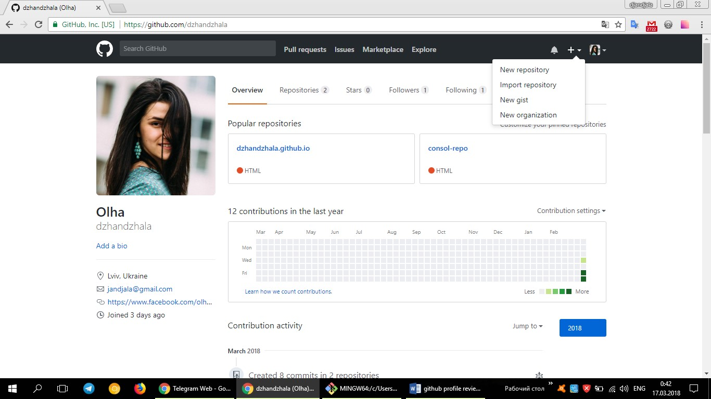
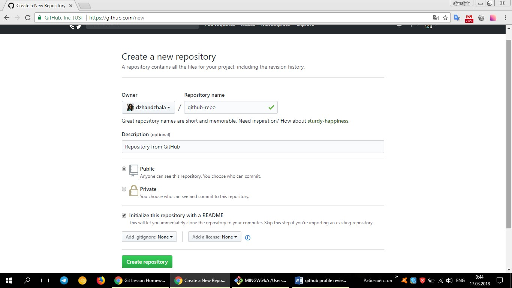
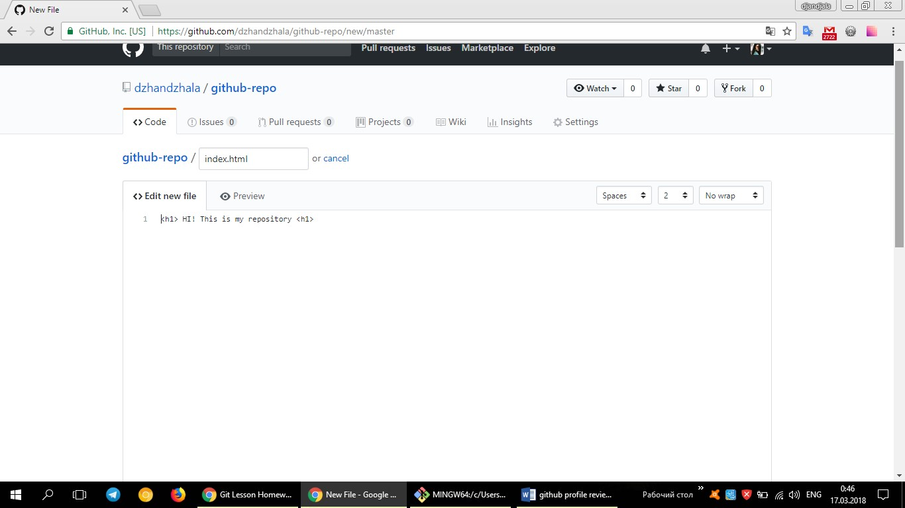
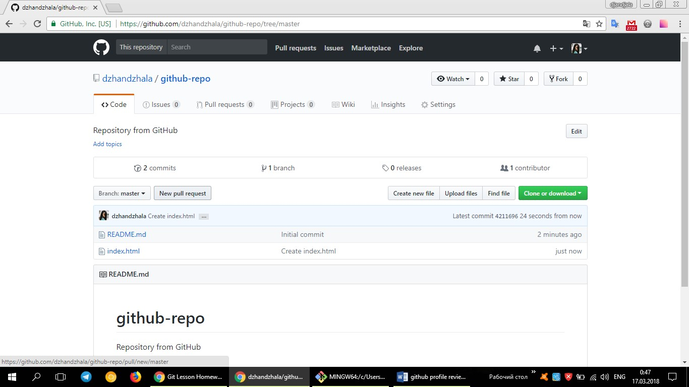

1.Set up Git (and configure) on your local machine.

2.Github profile review.
https://github.com/dzhandzhalaПлюси
- посилання на фб
- пошта
- вказане місто,країна
- є моя фотографія
Мінуси
- потрібно працювати з репозиторіями, комітити
- активно ставити зірочки, фоловити
- потрібно додати лінк на linkedlin
3.Create and configure first repository from console. Push few files.
    4.Create and configure first repository from Github. Push few files.
   5.Make Fork and PR of repository from anyone else from group.
https://github.com/Helen17/first-repository-on-GitHub/pull/16.Create Github Pages from any of your repository (or create new repository)
https://dzhandzhala.github.io/VanG/7.Play https://try.github.io/.


8. Fork, push changes for Fork, and Create PR for github.com/cursor-education/welcome-to-github.
https://github.com/cursor-education/welcome-to-github/pull/331